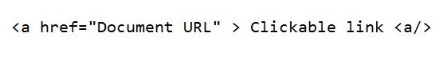
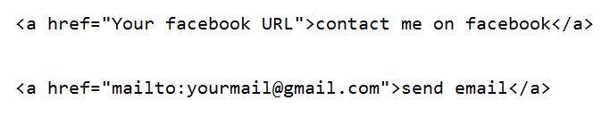
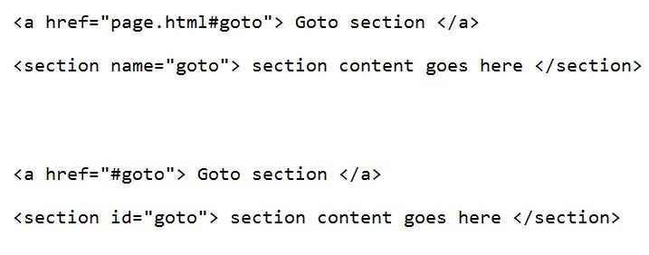

Home list links Images tables forms
Links(hyperlinks)
Web pages can contain links that take you directly to other pages and even specific parts of a given page. These links are known as hyperlinks.
Hyperlinks allow visitors to navigate between Web sites by clicking on words, phrases, and images. Thus you can create hyperlinks using text or images available on your any web page.
There are three types of link in HTML, they are:
- Linking to external pages => Absolute reference.
- Linking to internal pages. And
- Linking to a particular secion of a page.
A link is specified using the anchor tag. Anything between the opening tag and the closing tag becomes part of the link and a user can click that part to reach to the linked document.
Following is the simple syntax to use this tag.

Linking to external pages
Here, we use this method of linking as a bridge to connect our webpage to another page that is not on our website.
We do this by inputing the URL of the external page we want to link into the Href attributes. href="external URL"
we can also create a link to send emails from our web page, we simply do thos by folloeing this syntax href="mailto:valid.email"

Linking to internal pages
This is done by inputing the directory of the page file(file path), into the value of the href attribute of the anchor tag.
href="./page.html" or ./folder/page.html if it is in another folder.
linking to section of the page
There are two methods of linking to a section of a page. We do this by using either a NAME attribute or an ID
- By using a name attribute, we add the name attribute to the opening tag of that particular section and give is any value, We then go to the point we are linking from and add our anchor tag with this href value: href="page.html#sectionname". that is the directory of the current page # the name given to the section you want to link to.
- By using the ID, we add an ID attribute to the section we are linking to and give it any value, we then go to the point we are linking from and add our anchor tag with this href value: href="#idvalues"

Some anchor attributes:
- href: specifies the URL of the target of a hyperlink.
Its value is any valid document URL, absolute or relative,
including a fragment identifier or a JavaScript code fragment.
- target: specify where to display the contents of a selected hyperlink.
If set to "_blank" then a new window will be opened to display the loaded page,
if set to "_top" or "_parent" then same window will be used to display the loaded document,
if set to "_self" then loads the new page in current window.
By default its "_self".
- name & id: attributes places a label within a document.
When that label is used in a link to that document,
it is the equivalent of telling the browser to goto that label.
- event: attributes like onClick, onMouseOver etc. are used to trigger any Javascript ot VBscript code.
- title: attribute lets you specify a title for the document to which you are linking.
The value of the attribute is any string, enclosed in quotation marks.
The browser might use it when displaying the link, perhaps flashing the title when the mouse passes over the link.
- accesskey: attribute attribute provides a keyboard shortcut that can be used to activate a link.
For example, you could make the T key an access key so that when the user presses
the Alt or Ctrl key on his keyboard (depending on his operating system) along with the T key, the link gets activated.
Now try this
Create a webpage about the different programs in the department of Computer science, Kwara State University. Make each program a section and create links to each section
- Regular
- PDP (Professional Degree Programme)-
- IDEL
G00DLUCK!
click to view solution
Goto top